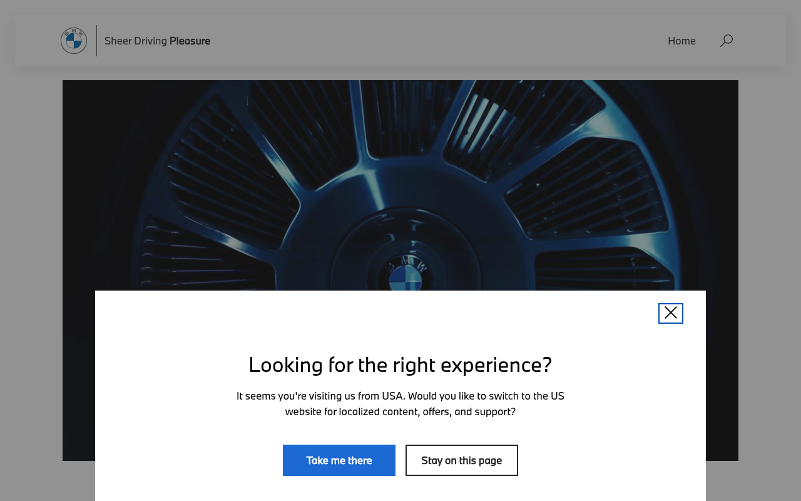

Design System Report
BMW — 극도의 모노크롬
bmw.com CSS 파싱 결과: chromatic 컬러 전무. 사이트는 흑/백/회색 모노크롬만 사용하고 브랜드 블루는 로고에만 존재한다.

Quick Start
5분 안에 BMW처럼 만들기 — 3가지만 하면 80%
1 · 폰트 + weight
body {
font-family: "BMWTypeNext",
"Helvetica Neue",
Arial, sans-serif;
font-weight: 400;
}
2 · 배경 + 텍스트
:root {
--bg: #FFFFFF;
--fg: #1A1A1A;
}
body {
background: var(--bg);
color: var(--fg);
}
3 · 브랜드 컬러
:root {
/* 로고용 블루 */
--brand: #1C69D4;
/* UI 버튼은 블랙 */
--btn-bg: #1A1A1A;
}
절대 하지 말아야 할 것 하나: BMW 파란색을 UI 전반에 과용하는 것. CSS에서 chromatic 컬러가 하나도 감지되지 않을 만큼 파란색은 억제되어 있다. UI 버튼은 블랙.
Source
bmw.com
극도의 모노크롬
Fetched
2026.04.13
CSS custom properties 파싱
System
Custom
BMW Group 내부 시스템
Chromatic
0색
CSS에서 감지된 chromatic 0
01 · Provenance
출처와 수집 기준
CSS 파싱에서 chromatic 컬러 전혀 없음 — 중간 회색 #8E8E8E 하나만 감지.
Source URL
https://bmw.comFetched2026-04-13
Token prefixN/A — 커스텀 프로퍼티 미노출
Chromatic candidates0개 (중간 회색 1개만 감지)
MethodCSS 커스텀 프로퍼티 직접 파싱 · AI 추론 없음
02 · 컬러
CSS에서 감지된 컬러: 회색 1개
BMW 마케팅 사이트는 완전한 모노크롬. 파란색은 CSS에 없고 로고 SVG에만 존재한다.
CSS 감지 컬러
중간 회색 (CSS 유일 감지)#8E8E8E
추정 UI 팔레트 (시각 관찰)
페이지 배경#FFFFFF
버튼/텍스트#1A1A1A
브랜드 블루 (로고)#1C69D4
주의: 추정 UI 팔레트는 CSS 파싱 데이터가 아닌 브랜드 아이덴티티 기반. CSS에서 실제 확인된 것은
#8E8E8E 하나뿐.
03 · 컴포넌트
샤프 코너 버튼 + 전체 폭 차량 Hero
BMW UI의 핵심: radius 0 (샤프 코너), 블랙 CTA, letter-spacing 넓게.
Primary CTA Button
border-radius: 0 (샤프 코너)letter-spacing: 0.08emtext-transform: uppercasefont-weight: 700
04 · 라이팅 원칙
독일식 정밀성, 위엄 있는 단문
BMW 카피는 정관사("The"), 짧은 문장, 프리미엄 어조.
Headline
"The BMW 7 Series."
Subheading
"Efficiency meets performance."
05 · CSS 스니펫
Drop-in CSS
/* BMW — copy into your root stylesheet */
:root {
--bmw-font-family: "BMWTypeNext", "Helvetica Neue", Arial, sans-serif;
--bmw-font-weight-normal: 400;
--bmw-font-weight-bold: 700;
/* Brand — 로고 블루 (UI에 절제 사용) */
--bmw-color-brand-blue: #1C69D4;
/* Surfaces (모노크롬) */
--bmw-bg-page: #FFFFFF;
--bmw-bg-dark: #1A1A1A;
--bmw-text: #1A1A1A;
--bmw-text-muted: #8E8E8E;
/* Button */
--bmw-btn-bg: #1A1A1A;
--bmw-btn-color: #FFFFFF;
--bmw-btn-radius: 0; /* 샤프 코너 */
--bmw-btn-letter-spacing: 0.08em;
}06 · Do / Don't
자주 틀리는 것들
✓ DO
- 레이아웃 극도로 미니멀 — 흑/백/회색 중심
- Hero는 차량 전체 폭 사진
- CTA 버튼 모서리 샤프하게 (
radius: 0) letter-spacing: 0.08em이상으로 프리미엄 feel- 중간 회색은
#8E8E8E
✗ DON'T
- BMW 블루를 배경이나 버튼에 과용하지 말 것
- 둥근 버튼 모서리 쓰지 말 것
- 컬러풀한 그라디언트 쓰지 말 것
font-weight: 300이하 쓰지 말 것